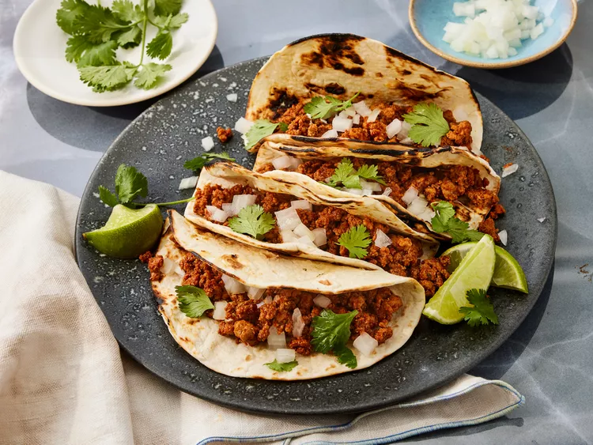

Home
Ground Turkey Taco Meat

Description
This ground turkey taco meat recipe is a healthier alternative to traditional beef tacos. It's
packed with flavor and can be customized with your favorite toppings. Perfect for a quick weeknight dinner or meal prep for the week.
Whether you're a fan of tacos or just looking for a new way to enjoy ground turkey, this recipe is sure to become a favorite in your household.
Ingredients
- 1 pound ground turkey
- 1 tablespoon olive oil
- 1 small onion, finely chopped
- 2 cloves garlic, minced
- 1 tablespoon chili powder
- 1 teaspoon ground cumin
- 1 teaspoon paprika
- 1 teaspoon dried oregano
- ½ teaspoon salt, or to taste
- ¼ teaspoon black pepper
- ¼ teaspoon crushed red pepper flakes (optional, for heat)
- 1 (8 ounce) can tomato sauce
- 1 (4 ounce) can diced green chilies
Steps
- Heat olive oil in a large skillet over medium heat. Add the chopped onion and cook until softened, about 3-4 minutes. Add the minced garlic and cook for another minute until fragrant.
- Add the ground turkey to the skillet. Cook, breaking it up with a spoon, until it is no longer pink and fully cooked through, about 5-7 minutes.
- Stir in the chili powder, ground cumin, paprika, dried oregano, salt, black pepper, and crushed red pepper flakes (if using). Cook for 1-2 minutes to allow the spices to bloom and coat the turkey evenly.
- Add the tomato sauce and diced green chilies to the skillet. Stir to combine all the ingredients. Reduce the heat to low and let the mixture simmer for 10-15 minutes, allowing the flavors to meld together. Stir occasionally to prevent sticking.
- Taste the taco meat and adjust the seasoning if needed. If you prefer a thicker consistency, let it simmer uncovered for a few more minutes. If you like it saucier, you can add a little water or chicken broth to reach your desired consistency.
- Once the taco meat is ready, remove it from the heat. Serve it in taco shells or tortillas with your favorite toppings such as shredded cheese, lettuce, diced tomatoes, sour cream, and salsa. Enjoy your delicious ground turkey tacos!